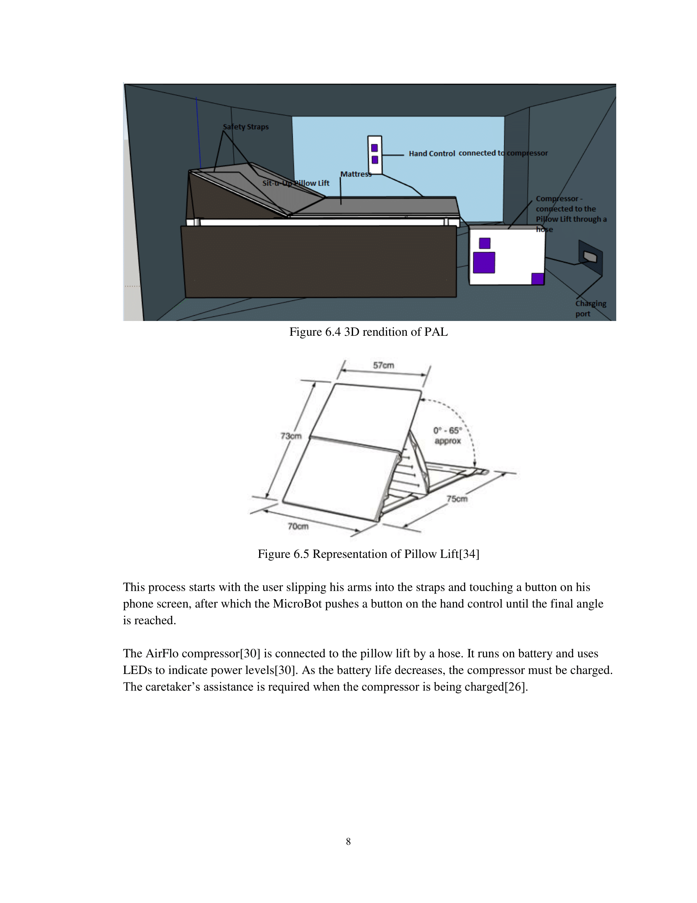
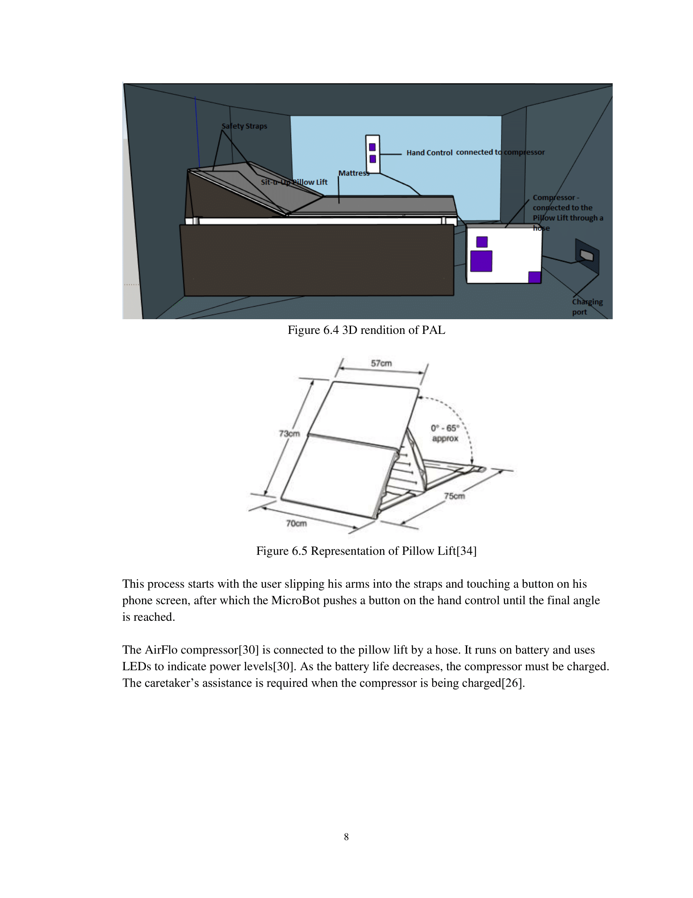

These are some of the notable research projects I've done, both by myself and as part of a team.

Preview
Available here.
Written as part of the APS162 (Calculus I for Engineers) course at the University of Toronto in Summer 2017.
Tic-tac-toe, largely due to its simplicity, is perhaps one of the most analyzed games in history. Many algorithms have been developed to play the game perfectly (including the well-known minimax algorithm – a general algorithm in game theory that minimizes the maximum score of the opponent), and a countless number of software programs have been written to implement these algorithms. Almost always, the program will require iterating through many possible moves, sometimes 3 or more moves ahead, to determine the best choice of move for the current game board. As a result, inefficiencies can plague otherwise ingenious code.
Linear algebra can help us improve the efficiency of tic-tac-toe programs. In particular, we will see how representing every move with a specific matrix can lend us insight into the best move for every game position.


Preview
Available here.
Written as part of the APS111 (Engineering Strategies and Practice I) course at the University of Toronto in Fall 2017.
Wildfires in Ontario cause significant damage to the economy, infrastructure, and lives of remote and indigenous communities. This damage is caused solely by the 2.8% of wildfires that escape current early detection methods. As a result, the Ministry of Natural Resources and Forestry needs a design that can detect wildfires in a short timeframe to allow fire services ample time to take action. This document covers the foundations of the project by providing functions, objectives, constraints, and other necessary information which will aid solution generation. Once the project requirements are complete, ideas were generated, resulting in three possible solutions: the use of drones and satellites, watchtower cameras, and wireless sensor networks. After discussing alternative solutions, the drones and satellites design is chosen as the most effective and the implementation of the design is discussed.
The team concluded that the drones and satellites solution meets all of the needs of the client. The following step after the proposed documentation is to implement the solution in the forests which will start with quantitative test performing.
Available here.
Written as part of the APS163 (Calculus II for Engineers) course at the University of Toronto in Fall 2017.
This paper will examine the mechanisms behind various methodologies of cooling computer components. Specifically, the basis behind a passive-cooling system, an air-cooling system, and a liquid-cooling system will be explored. The focus will be on the cooling of a central processing unit, or CPU, though other components will likely adhere to the same basic principles that we will discover in our analysis.
It may be interesting to apply these basic principles to more exotic forms of computer cooling. In particular, phase-change cooling – in which the processor is cooled by the absorption of heat by a gas compressed into a liquid – and liquid nitrogen (LN2) cooling – in which liquid nitrogen is "poured" onto the processor and creates an extremely large temperature gradient – may be compelling to analyze.
Available here.
Written as part of the Biomedical Engineering Competition at the University of Toronto in Winter 2018. Note that, due to the nature of the competition, only the abstract of the research was submitted.
The scope of our design is to improve the micro-movement, dexterity, and coordination in the fingers of a multiple sclerosis (MS) patient for being able to perform daily tasks requiring precision in movement such as using devices like a smartphone and achieve tasks such as writing, dressing or holding objects.
This implementation should enable MS patients to use a smartphone-compatible device to satisfy their everyday needs and this idea may be extended to open possibilities for employing machine learning to investigate typing usage and patterns, as well as finger movement statistics.
 

Preview
Available here.
Written as part of the APS112 (Engineering Strategies and Practice II) course at the University of Toronto in Winter 2018.
The client is searching for a design to address the needs of a specific user. Essentially, the purpose of the design is to enable the user to go from a horizontal position in his bed to at least 45°; this must be achieved without aid from another person. The user, who has virtually no grip strength, can exert approximately 0.60 Newtons (enough force to actuate a key on a mechanical keyboard). He has negligible strength in his arms and no use of his legs, though he is fully capable of speaking. Current common methods to aid people with similar disabilities occupy a significant amount of space, which the user does not have.
Through the development of this design, the user will be self-sufficient with regards to reaching an inclined position in bed, which will positively impact the quality of life of both the user and his caretaker. The design team assessed the functional requirements of any solution, and took into consideration the attributes of the user’s bedroom as well as of potential stakeholders (the neighbors, for example). From considering three original design ideas, the Patient Air Lift was determined to be more suitable than the other two, and its performance and testing methodologies were examined.